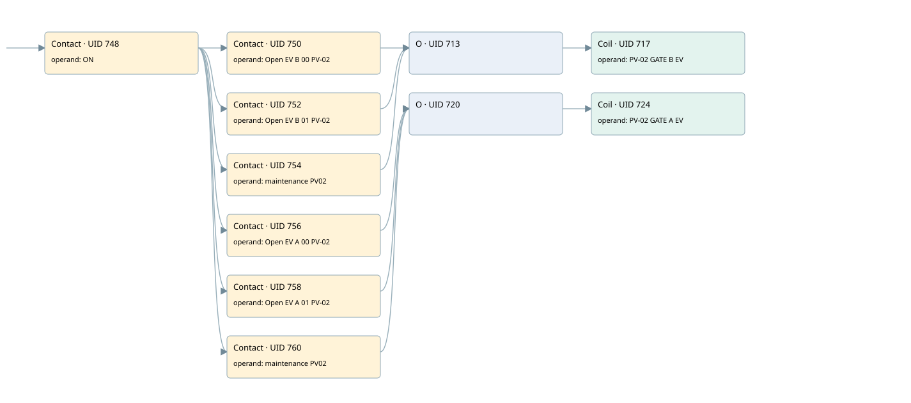

a 56.4 ev-05 valvecommand
r1 scraps gate 2 · 검색 색인 순서 10 · 원본 내부 NID 추정 8
백업 PLF 원본의 2835833 바이트 위치에서 복원한 XML. 검색 문서 1920의 객체 키 16102200e711000000000000와 연결했다. 이름 해석 9/9개. 남은 RefId는 상수 또는 미해석 참조다.
연결 구조 다시 그리기
원본 Part/PCon/Wire를 이용한 연결도다. TIA 화면의 래더 배치 또는 실행 결과를 재현한 그림은 아니다. 핀 연결은 아래 표와 원본 XML을 기준으로 읽는다. 노드 위에 마우스를 두면 피연산자 이름을 볼 수 있다.

접점·코일·블록과 피연산자
| Part UID | Gate | Negated 핀 | 연결 피연산자 |
|---|---|---|---|
| 748 | Contact | operand = ON | |
| 750 | Contact | operand = Open EV B 00 PV-02 | |
| 752 | Contact | operand = Open EV B 01 PV-02 | |
| 754 | Contact | operand = maintenance PV02 | |
| 713 | O | ||
| 717 | Coil | operand = PV-02 GATE B EV | |
| 756 | Contact | operand = Open EV A 00 PV-02 | |
| 758 | Contact | operand = Open EV A 01 PV-02 | |
| 760 | Contact | operand = maintenance PV02 | |
| 720 | O | ||
| 724 | Coil | operand = PV-02 GATE A EV |
접점 경로를 펼친 조건식
Contact·O/A·비교기의 원본 연결을 읽기 쉽게 펼친 보조 해석이다. POWER는 전원 레일 시작을 뜻한다. 호출 블록·에지·타이머의 내부 동작과 다중 쓰기 순서는 이 표로 실행 검증하지 않았다. 미해석 핀과 RefId는 원문 연결표에서 확인한다.
| UID | 동작 | 대상 | 원본 접점 경로 | 내용 |
|---|---|---|---|---|
| 717 | Coil | PV-02 GATE B EV | ((ON AND Open EV B 00 PV-02) OR (ON AND Open EV B 01 PV-02) OR (ON AND maintenance PV02)) | 조건에 따른 Coil 기록 |
| 724 | Coil | PV-02 GATE A EV | ((ON AND Open EV A 00 PV-02) OR (ON AND Open EV A 01 PV-02) OR (ON AND maintenance PV02)) | 조건에 따른 Coil 기록 |
원본 배선 연결
| Wire UID | 동일 Wire 연결 끝점 |
|---|---|
| 762 | Powerrail {} ↔ Part 748.in |
| 734 | ORef 725 (ON) ↔ Part 748.operand |
| 749 | Part 748.out ↔ Part 750.in ↔ Part 752.in ↔ Part 754.in ↔ Part 756.in ↔ Part 758.in ↔ Part 760.in |
| 735 | ORef 726 (Open EV B 00 PV-02) ↔ Part 750.operand |
| 751 | Part 750.out ↔ Part 713.in1 |
| 736 | ORef 727 (Open EV B 01 PV-02) ↔ Part 752.operand |
| 753 | Part 752.out ↔ Part 713.in2 |
| 737 | ORef 728 (maintenance PV02) ↔ Part 754.operand |
| 755 | Part 754.out ↔ Part 713.in3 |
| 738 | Part 713.out ↔ Part 717.in |
| 740 | ORef 729 (PV-02 GATE B EV) ↔ Part 717.operand |
| 741 | ORef 730 (Open EV A 00 PV-02) ↔ Part 756.operand |
| 757 | Part 756.out ↔ Part 720.in1 |
| 742 | ORef 731 (Open EV A 01 PV-02) ↔ Part 758.operand |
| 759 | Part 758.out ↔ Part 720.in2 |
| 743 | ORef 732 (maintenance PV02) ↔ Part 760.operand |
| 761 | Part 760.out ↔ Part 720.in3 |
| 744 | Part 720.out ↔ Part 724.in |
| 746 | ORef 733 (PV-02 GATE A EV) ↔ Part 724.operand |
식별자 해석 근거 9개
| ORef UID | RefId | 이름 | IdentXmlPart 파일 | 해석 방법 |
|---|---|---|---|---|
| 725 | 1 | ON | 0607-IdentXmlPart.xml | UID/RID + search-text + NID agreement |
| 726 | 82 | Open EV B 00 PV-02 | 0607-IdentXmlPart.xml | UID/RID + search-text + NID agreement |
| 727 | 62 | Open EV B 01 PV-02 | 0607-IdentXmlPart.xml | UID/RID + search-text + NID agreement |
| 728 | 83 | maintenance PV02 | 0607-IdentXmlPart.xml | UID/RID + search-text + NID agreement |
| 729 | 84 | PV-02 GATE B EV | 0607-IdentXmlPart.xml | UID/RID + search-text + NID agreement |
| 730 | 80 | Open EV A 00 PV-02 | 0607-IdentXmlPart.xml | UID/RID + search-text + NID agreement |
| 731 | 61 | Open EV A 01 PV-02 | 0607-IdentXmlPart.xml | UID/RID + search-text + NID agreement |
| 732 | 83 | maintenance PV02 | 0607-IdentXmlPart.xml | UID/RID + search-text + NID agreement |
| 733 | 85 | PV-02 GATE A EV | 0607-IdentXmlPart.xml | UID/RID + search-text + NID agreement |
검색 코드 보조 자료
참조 명칭을 찾기 위한 자료이며 실행 순서나 AND/OR 관계는 위 연결표로 확인한다.
"on" "open ev b 00 pv-02" "pv-02 gate b ev" "open ev b 01 pv-02" "maintenance pv02" "open ev a 00 pv-02" "pv-02 gate a ev" "open ev a 01 pv-02" "maintenance pv02"